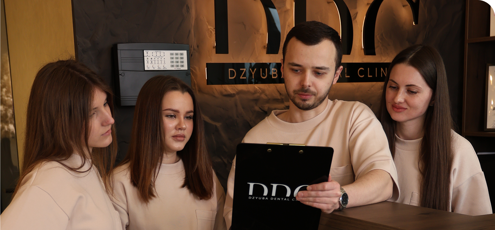

НАША КОМАНДА
Професійне Лікування Зубів
Клініка DZYUBA DENTAL CLINIC відкрила свої двері для пацієнтів 1 листопада 2025 року. З цього дня ми щодня працюємо для того, щоб кожен, хто звертається до нас, відчував впевненість у своєму виборі. Для команди DZYUBA DENTAL CLINIC важливо не просто надати послугу, а створити відчуття спокою та довіри. Ми вдячні кожному пацієнту за довіру і цінуємо можливість бути частиною вашого життя.

У DZYUBA DENTAL CLINIC ми створили атмосферу, в якій зникає страх перед стоматологом. Спокій, комфорт, уважність до деталей — усе це ви відчуваєте, щойно переступаєте поріг клініки. У DDC приділяється особлива увага не лише результату лікування, а й самому процесу: щоб він був максимально безболісним, зрозумілим і комфортним. Ми пояснюємо кожен етап і завжди залишаємо простір для ваших запитань.
Ми переконані, що кожен пацієнт — це окрема історія. Саме тому в DZYUBA DENTAL CLINIC не існує універсальних рішень. Кожен план лікування ми формуємо індивідуально, враховуючи стан здоров’я, побажання та очікування людини. Такий підхід дозволяє досягати не лише якісного, а й прогнозованого результату, яким можна бути впевненим.

У нашій клініці представлені всі напрямки сучасної стоматології, що дозволяє вирішувати будь-які завдання в одному місці. Це означає комплексний підхід, зручність та економію часу для кожного пацієнта DDC.
Терапевтична стоматологія — це основа здорової посмішки. У DZYUBA DENTAL CLINIC ми проводимо лікування зубів із використанням сучасного обладнання, мікроскопа та оптичного збільшення. Це дає змогу максимально точно діагностувати проблему та ефективно її усунути, зберігаючи здорові тканини зуба та забезпечуючи довготривалий результат.
Естетична стоматологія допомагає створити посмішку, яка виглядає природно та гармонійно. У DDC ми працюємо над формою, кольором і пропорціями зубів, щоб результат виглядав максимально природно і підкреслював вашу індивідуальність, а не виглядав штучно.
Хірургічний напрямок включає видалення зубів будь-якої складності та імплантацію. У DZYUBA DENTAL CLINIC ми використовуємо сучасні методики, які дозволяють зробити процедури максимально комфортними та з мінімальним періодом відновлення. Пацієнти DDC отримують не лише якісне лікування, а й підтримку на всіх етапах.
Імплантація — це можливість відновити втрачені зуби та повернути повноцінну функцію жування і впевненість у собі. У DDC ми працюємо за чіткими протоколами та використовуємо тільки перевірені системи імплантів, що гарантує надійність і довготривалий результат.
Ортодонтія дозволяє виправити прикус та вирівняти зуби. У нашій клініці доступні як класичні брекет-системи, так і сучасні елайнери — прозорі капи, які практично непомітні в повсякденному житті. У DDC ми підбираємо рішення, яке підходить саме вам.
Ендодонтія — це точне лікування кореневих каналів під мікроскопом. Такий підхід у DZYUBA DENTAL CLINIC дозволяє зберегти зуб навіть у складних випадках і уникнути його видалення, що є одним із головних пріоритетів сучасної стоматології.

Ми створили простір, де однаково комфортно і дорослим, і дітям. Простір, у якому усміхається вся сім’я. У DDC важливо, щоб кожен пацієнт почувався спокійно незалежно від віку чи досвіду попереднього лікування.
Але для нас важливе не лише лікування. У DZYUBA DENTAL CLINIC ми будуємо довготривалі відносини з нашими пацієнтами. Багато з вас стають для нас більше, ніж просто пацієнтами — ми знаємо ваші історії, радіємо вашим подіям, щиро вітаємо зі святами.
Ми віримо, що справжня стоматологія — це не тільки про зуби. Це про довіру, підтримку і людяність. Саме тому команда DZYUBA DENTAL CLINIC завжди поруч — не лише під час лікування, а й після нього.
Наша мета — щоб кожен пацієнт виходив із клініки не лише зі здоровою посмішкою, а й з відчуттям впевненості, спокою та задоволення від результату. Саме такий підхід формує довіру до DDC.
Ми постійно розвиваємося, впроваджуємо нові технології, вдосконалюємо навички та підвищуємо рівень сервісу. Бо розуміємо: сучасна стоматологія — це динамічна сфера, яка потребує постійного розвитку.
І саме тому DZYUBA DENTAL CLINIC рухається вперед разом зі своїми пацієнтами.
Інформація Про Послуги
Консультація лікаря
Перший і найважливіший етап — це детальна консультація. Лікар проводить повний огляд ротової порожнини, аналізує стан зубів і ясен, вивчає КТ або рентген-знімки та складає індивідуальний план лікування. Ви отримуєте чітке розуміння ситуації, можливих варіантів лікування та їх результатів. Це дозволяє уникнути зайвих процедур і прийняти зважене рішення.
Художня реставрація зубів
Ми відновлюємо зуби так, щоб вони виглядали максимально природно. Враховується форма, колір, прозорість і анатомія зуба. Результат — не просто «залікований» зуб, а гармонійна частина вашої усмішки. Такий підхід дозволяє досягти естетики, яку складно відрізнити від натуральних зубів.
Ендодонтичне лікування (лікування каналів)
Лікування кореневих каналів проводиться під мікроскопом, що значно підвищує точність і ефективність. Це дозволяє ретельно очистити та запломбувати канали навіть у складних випадках і максимально зберегти власний зуб. Ми працюємо за сучасними протоколами, що забезпечують довготривалий результат.
Хірургічна стоматологія
Проводимо видалення зубів будь-якої складності — від простих до ретинованих і дистопованих. Використовуємо сучасні методики, які мінімізують травматичність, скорочують період відновлення та роблять процедуру максимально комфортною для пацієнта.
Імплантація
Ефективне рішення для відновлення втрачених зубів. Ми пропонуємо комплексний підхід: від встановлення імплантату до повного відновлення зуба коронкою. Використовуються перевірені системи імплантів і сучасне цифрове планування, що забезпечує точність, надійність і природний вигляд результату.
Ортопедична стоматологія
Відновлення зубів за допомогою сучасних конструкцій, які поєднують естетику та міцність.
Цирконієві коронки дозволяють повністю відтворити природний вигляд зуба, витримують навантаження та
мають тривалий термін служби.
Вініри — це тонкі керамічні накладки, які допомагають створити ідеальну усмішку, змінюючи форму,
колір і положення зубів із максимально природним ефектом.
Ортодонтія
Виправлення прикусу та вирівнювання зубів за допомогою сучасних рішень. Ми пропонуємо як класичні брекет-системи, так і більш сучасні варіанти — самолігуючі брекети та прозорі елайнери. Кожен варіант підбирається індивідуально залежно від клінічної ситуації та способу життя пацієнта.
Чому обирають нас
Ми поєднуємо досвід лікарів, сучасне обладнання та індивідуальний підхід до кожного пацієнта. У
своїй роботі використовуємо мікроскоп, цифрові технології та працюємо за сучасними міжнародними
стандартами.
Наше завдання — не просто вирішити проблему, а зробити це максимально комфортно, зрозуміло та з
довготривалим результатом. Ми пояснюємо кожен етап лікування, будуємо довіру та завжди орієнтуємося
на потреби пацієнта.
Саме тому наші послуги — це поєднання якості, естетики та турботи, яке ви відчуваєте з першого
візиту.